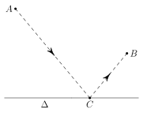

Composition à son domicile.
Table of Contents
1. Comment rendre ces devoirs maisons ?
Tous ces devoirs maisons sont facultatifs.
Chaque section de ce document correspond à un seul devoir maison. Ils sont de difficultés inégales, mais ils seront tous notés sur 10 points.
Vous pouvez utilisez Geogebra, ou bien un programme Python pour répondre aux questions.
Dans ce cas, il faut joindre par mél les documents que vous avez écrits, en le nommant sous la forme :
Prénom-NomDeFamille-NomDuProbleme.py
Avec l'extension adaptée en fonction du type de fichier que vous avez.
Ce qui comptera le plus dans ces devoirs maisons est la démarche, comment vous pouvez montrer et convaincre les autres que votre résultat est le bon.
Si cette démarche est absente, il ne faudra pas s'étonner de l'absence de points.
Vous pouvez rendre ces travaux dans l'ordre que vous souhaitez.
2. Une trajectoire tu suivras
La trajectoire d'un ballon tiré depuis le sol est modélisée par la fonction \(f\) suivante : \[ f(x) = -\frac{1}{2}x^{2} - 20,79x \]
- Pourquoi la fonction qui modélise une telle trajectoire doit s'annuler en \(0\) ?
- Quelle est la hauteur maximale atteinte par le ballon ?
3. Une cible tu viseras
La trajectoire d'une flèche tirée depuis le sol par un archer d'une taille de \(1,78\textrm{m}\) est donnée par la fonction suivante : \[ g(x) = -0,00444x^{2} + 0.23917x + 1,78 \]
La flèche atteint le centre d'une cible. Ce centre est à \(1.5\) m du sol. Quelle est la distance au sol parcourue par la flèche ?
4. Vedi, vidi, vici.
Vous interceptez un message entre deux espions romains.
NSPC LXT YZECP NZXXLYOLYE PE XZT DZXXPD O LNNZCO AZFC ORNTOPC O FYP NSZDP YZFD LEELBFPCZYD OPXLTY
À vous de le déchiffrer !
5. Le temps tu surveilleras
Albert Einstein utilise deux montres inhabituelles qui ont toutes les deux un cadran de 24 heures.
Une montre va deux fois trop vite, et l'autre va à la bonne vitesse, mais dans le sens inverse.
Les deux montrent indiquent \(13\) heure.
Quelle sera la prochaine heure où l'affichage sera identique sur les deux montres ?
6. Une inégalité.
Montrer que, pour n'importe quel \(x\) et \(y\) réels, on a toujours l'inégalité suivante : \[ \left|xy\right| \leq \frac{x^{2} + y^{2}}{2} \]
Vous pourrez proposer un graphe de différentes fonctions, par exemple en fixant une des deux variables (posez par exemple \(y = 5\)).
7. Rebond.

On considère un point \(A(0; 4)\) et un point \(B(5; 2)\) du plan munit d'un repère orthonormé \((O; \vec{\imath}; \vec{\jmath})\). On considère un miroir, que l'on appelle \(\Delta\), placé à l'axe des abscisses.
On considère un rayon lumineux émanant du point \(A\), rebondissant sur la droite \(\Delta\), et arrivant en \(B\).
- Déterminer le point \(C\) sur la droite \(\Delta\), sachant que la trajectoire du rayon est celle qui minimise la trajectoire entre \(A\) et \(B\) en passant par \(C\).
- Calculer la distance de la trajectoire \(A\), \(C\), \(B\).
Indice : Considérer le «reflet» du point \(B\) dans le miroir \(\Delta\).
8. Un peu de divisibilité.
Vous devez servir des jus d'oranges sur un stand, et vous avez autant de jus d'orange que vous le souhaitez, mais vous n'avez que deux récipients d'une contenance précise, et un grand saladier non gradué. Les seules manipulations que vous pouvez faire avec vos récipients c'est de les vider ou de les remplir complètement.
Un récipient de \(a\textrm{ml}\), et un autre de \(b\textrm{ml}\).
Des participants (assez exigeants) vont vous demander une quantité précise \(c\) de jus d'orange dans leur verre.
Les nombres \(a\), \(b\) et \(c\) sont toujours des nombres entiers positifs non nuls.
Écrivez une fonction estCePossible(a, b, c) qui détermine s'il est possible ou
non de satisfaire leur commande.
Un exemple. Si vous avez un récipient de \(200\), et \(400\) ml, vous ne pouvez pas
satisfaire une commande de \(301\) ml précisément. Dans ce cas précis, on peut
voir que \(200\) et \(400\) sont pairs. Donc, quelque soit les manipulations que
l'on fait avec nos récipients, on ne pourra servir que des contenances d'une
valeur paire. Donc, le code estCePossible(200, 400, 301) devrait alors
retourner False, ou un message dans ce sens.
Ce sujet est particulièrement difficile. Toutes traces de recherches seront très grandement récompensées, même si elles n'aboutissent pas.
9. Un déterminant plein de couleur.
On choisi deux points du plan dans un repère orthonormé de coordonnées \(A=(2; 3)\) et \(B=(-1; 3)\).
On considère un point \(M=(x;y)\), pour \(x, y \in \mathbb{R}\). Au point \(M\), on associe une couleur, avec les règles suivantes :
- Si \(\textrm{det}(\overrightarrow{AB}, \overrightarrow{AM}) > 0\), on colorie en rouge.
- Si \(\textrm{det}(\overrightarrow{AB}, \overrightarrow{AM}) = 0\), on colorie en jaune.
- Si \(\textrm{det}(\overrightarrow{AB}, \overrightarrow{AM}) < 0\), on colorie en vert.
À quoi ressemblerait le plan une fois entièrement colorié ?